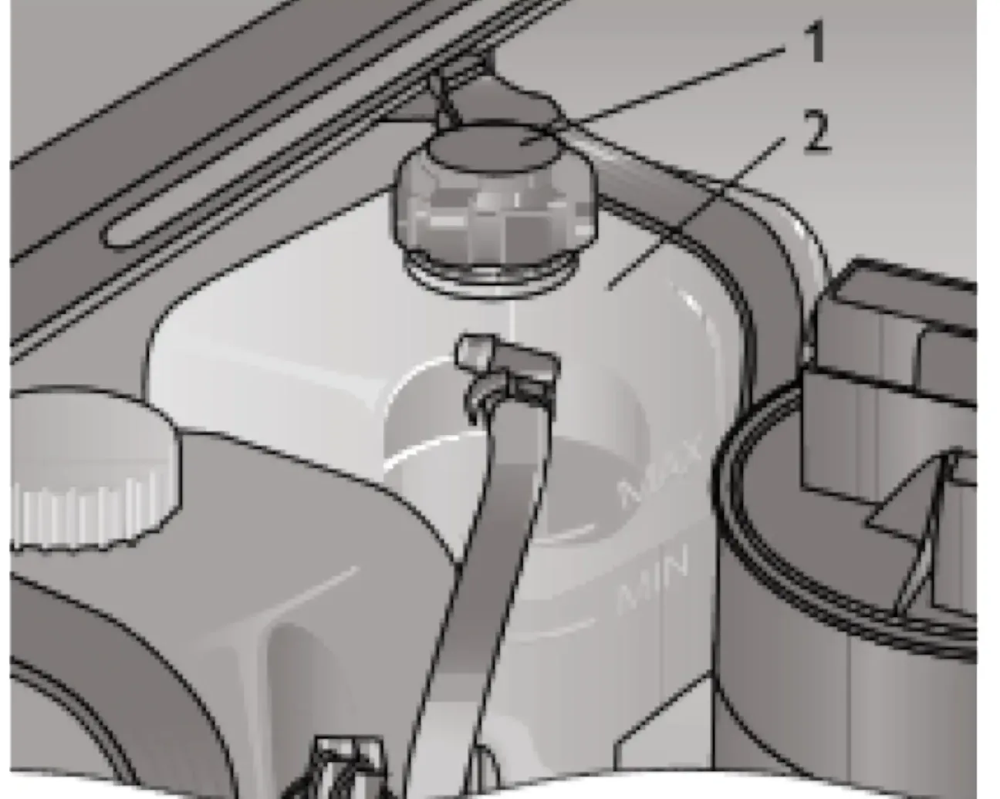

ТЕХНИЧЕСКОЕ ОБСЛУЖИВАНИЕ И ТЕКУЩИЙ РЕМОНТ АВТОМОБИЛЯ
Система охлаждения двигателя
охлаждающая жидкостьантифризрасширительный бачок
Уровень охлаждающей жидкости в расширительном бачке должен быть между метками «MAX» и «MIN», нанесёнными на корпусе бачка, который выполнен из полупрозрачного материала, позволяющего визуально контролировать уровень жидкости.

Предупреждение / внимание:
Проверку уровня и открытие пробки бачка для доливки жидкости проводите только на холодном двигателе. После заливки жидкости пробка должна быть плотно завёрнута, так как система при работающем и прогретом двигателе находится под давлением.
Проверку уровня и открытие пробки бачка для доливки жидкости проводите только на холодном двигателе. После заливки жидкости пробка должна быть плотно завёрнута, так как система при работающем и прогретом двигателе находится под давлением.
Примечание:
Применение чистой воды в качестве охлаждающей жидкости допускается только в экстренной ситуации. При первой же возможности необходимо заменить воду на рекомендованную охлаждающую жидкость.
Применение чистой воды в качестве охлаждающей жидкости допускается только в экстренной ситуации. При первой же возможности необходимо заменить воду на рекомендованную охлаждающую жидкость.
Предупреждение / внимание:
Охлаждающая жидкость ядовита! Её следует хранить в плотно закрытой таре и вне досягаемости детей.
Охлаждающая жидкость ядовита! Её следует хранить в плотно закрытой таре и вне досягаемости детей.
В тех случаях, когда уровень жидкости постоянно понижается и приходится часто доливать её, обратитесь к дилеру ЗАО «Джи Эм-АВТОВАЗ».